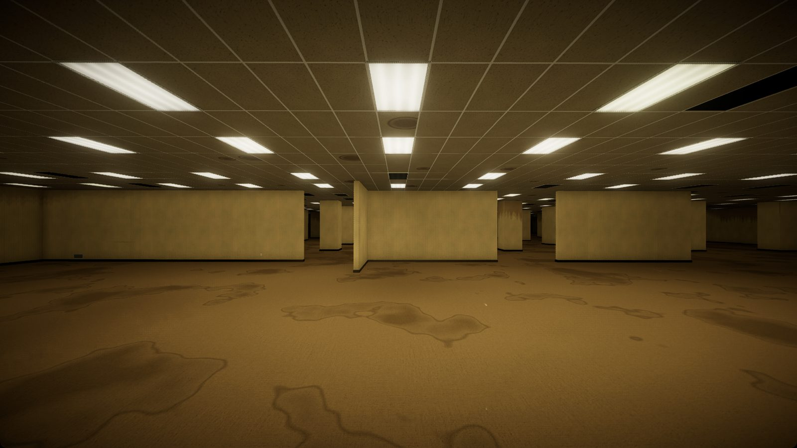

You were recording something ordinary. Then you stepped wrong, and the world peeled away. All you have is the camcorder, and the camcorder sees things you don't.
Early Access. Levels 0, 1 and 2 are playable, but the ending isn't recorded yet: the tape currently stops at the hatch out of Level 2. Content warning: horror, realistic dead bodies, blood and a skinless creature.
This game runs on a computer, not a phone or tablet. Open this page on a computer to download it.
There's no installer. You unpack a folder and run the game from it. Your computer will probably warn you the first time, because this is a free indie game that isn't registered with Microsoft or Apple. These steps get you past that.
Liminality-Windows.zip.Liminality.exe.Delete the folder. Saves and settings are in %USERPROFILE%\AppData\LocalLow\Bartol Kaluder, and you can delete that folder too.
Liminality.app into your Applications folder.Open Terminal, paste this line and press Return, then open the game again:
xattr -dr com.apple.quarantine /Applications/Liminality.appDrag the app to the Trash. Saves and settings are in ~/Library/Application Support/com.bartolkaluder.liminality, and you can delete that folder too.
Liminality-Linux.tar.gz.tar -xzf Liminality-Linux.tar.gzcd Liminality-Linux && ./Liminality.x86_64Delete the Liminality-Linux folder. Saves and settings are in ~/.config/unity3d/Bartol Kaluder, and you can delete that too.
| Move | WASD or arrow keys |
|---|---|
| Look | Mouse |
| Sprint | Left Shift |
| Jump | Space |
| Crouch | C or Left Ctrl |
| Interact | E |
| Look through the camcorder | Hold right mouse button |
| Use item | Left mouse button |
| Flashlight | F |
| Night vision | N |
| Rewind | R |
| Inventory | Tab |
| Throw | G |
| Chalk symbol | Middle mouse button |
| Pause | Esc |
Gamepads work too, and you can change keys in the game's SETUP menu.
Music in the preview videoDark Cavern Ambient by Paul Wortmann, public domain (CC0).
Design and directionBartol Kaluđer. Programming, sound and art built with Claude (Anthropic), in Unity 6.
3D scans by Renderpeople, via Sketchfab, licensed under CC BY 4.0 Eric Rigged 001, Carla Rigged 001, Claudia Rigged 002, Nathan Animated 003, Manuel Animated 001 and Sophia Animated 003. Modified: posed, reshaped, aged and bloodied for this game.
3D models via Sketchfab, licensed under CC BY 4.0 Metal School Lockers by Zixel, File Cabinet by Siberia, Office Chair by projectkaizen, Mesa Para Conferencias by franciscomedina77 and Retro Office Props by YJ_. Modified: cut, hinged, simplified and retinted.
Surfaces and props (CC0)Photoscanned materials from ambientCG and props from Poly Haven.
BreathingRecorded by ezwa ("Heavy breathing 2") and hugh ("Breathing man"), public domain, via Wikimedia Commons.
Inspired byThe Backrooms, from a 2019 post on 4chan's /x/, and the Kane Pixels found-footage series.